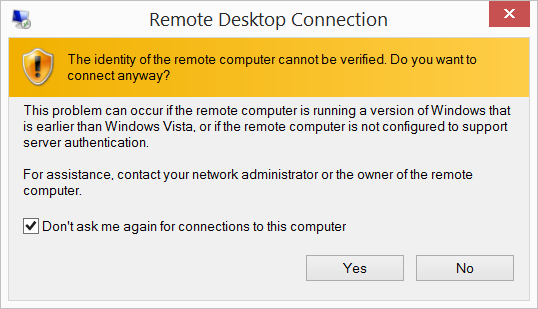
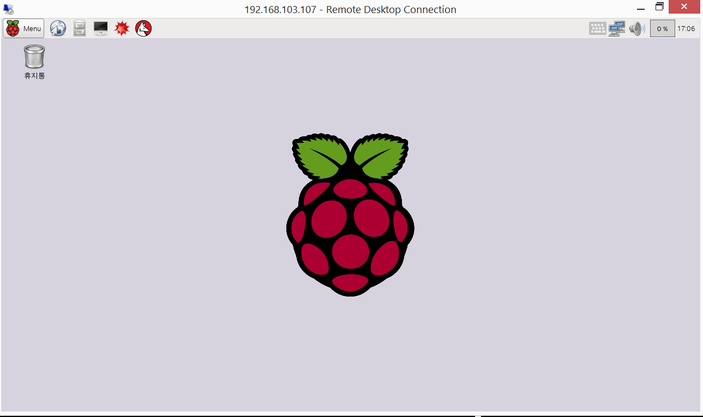
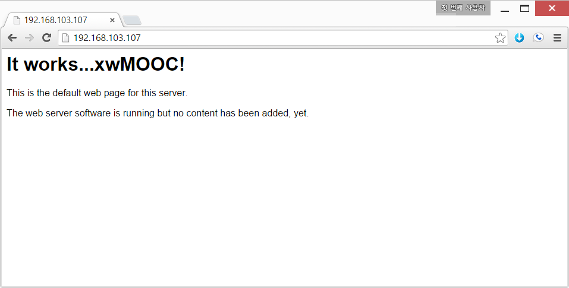
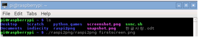
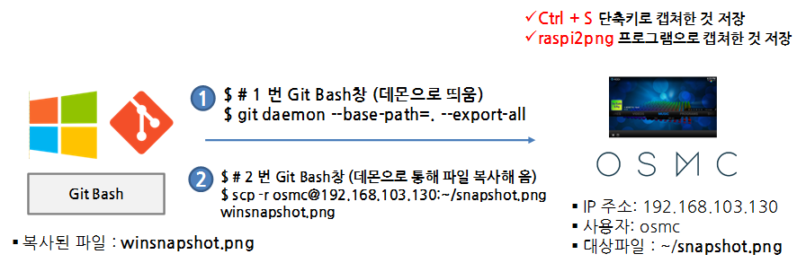
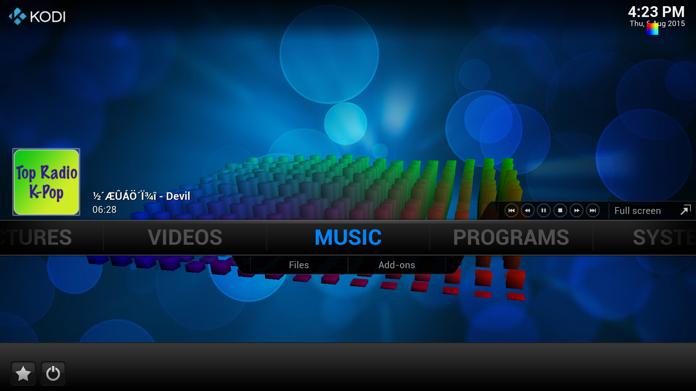

R 파이썬 소프트레이어 클라우드, xwMOOC
라즈베리파이 응용프로그램 유틸리티
학습 목표
- 운영체제가 장착된 라즈베리 파이에 세가지 인터페이스로 접속한다.
- 콘솔, GUI, 미디어센터 화면을 캡쳐한다.
- 동영상, 소리, 웹브라우져 설정한다.

1. 라즈베리 파이에 접근하는 세가지 방법
라즈베리 파이에 접근하는 세가지 방법은 명령라인인터페이스(CLI), 데스크톱(GUI), 웹을 통한 세가지 방법이 있다.
1.1. XRDP 원격 데스크톱 접근
# 원격 데스트톱 연결 프로그램 설치 및 설정
pi@raspberrypi ~ $ sudo apt-get update
pi@raspberrypi ~ $ sudo apt-get install -y xrdp
pi@raspberrypi ~ $ sudo service xrdp restart # sudo /etc/init.d/xrdp start 명령어도 가능.| 원격 데스크톱 | 승인 | 연결 연결된 화면 |
|---|---|---|
 |
 |  |
원격 데스크톱 서비스를 이용할 수 있는 다양한 방법이 있다. Xming, VNC를 사용하여 mstsc 원격 데스크톱 연결과 같은 효과를 낼 수 있다.
1.2. 명령라인 인터페이스 CLI를 통한 방법
__Git Bash__를 설치하고 콘솔에서 라즈베리 파이 IP를 입력한다. 명령어는 ssh pi@192.168.103.107으로 ssh (보안쉘, Secure Shell)로 192.168.103.107 IP를 갖는 호스트 컴퓨터에 pi사용자로 로그인한다. 비밀번호는 raspberry를 입력하면 라즈베리파이에 로그인했다.
admin@STATKCLEE /c/pyr-cloudlayer (gh-pages)
$ ssh pi@192.168.103.107
pi@192.168.103.107's password:
Linux raspberrypi 3.18.11-v7+ #781 SMP PREEMPT Tue Apr 21 18:07:59 BST 2015 armv7l
The programs included with the Debian GNU/Linux system are free software;
the exact distribution terms for each program are described in the
individual files in /usr/share/doc/*/copyright.
Debian GNU/Linux comes with ABSOLUTELY NO WARRANTY, to the extent
permitted by applicable law.
Last login: Thu Jul 30 16:59:13 2015 from 192.168.103.125
pi@raspberrypi ~ $1.3. 웹 인터페이스를 통한 방법
라즈베리파이를 웹서버로 만들기 위해서 아파치 웹서버를 설치한다. sudo apt-get install -y apache2 명령어를 콘솔에서 입력하면 아파치 웹서버가 설치되어 웹브라우져를 통해 라즈베리파이에 접근할 수 있다.
pi@raspberrypi ~ $ sudo apt-get install -y apache2/var/www/ 폴더에 index.html 파일을 수정하거나 개발된 웹서비스를 웹서비스 제공 디렉토리에 저장하면 된다.

2. 화면 캡쳐
2.1. 명령라인 인터페이스 화면 캡쳐
라즈베리 파이 명령라인 인터페이스(CLI)를 쓰게 되면 터미널 콘솔에 찍히는 색깔이 검은색 바탕에 흰색이 아니고, 사용자명/호스트 컴퓨터명/현재 디렉토리/파일과 디렉토리에 시각정보를 입혀서 보기 좋게 표현한다. 이런 화면을 잡아낼 때 사용하는 것이 fbgrab 이다.
fbgrab 설치 및 실행 명령어 sudo apt-get install fbgrab 명령어를 넣어 설치하고, sudo fbgrab screenshot.png 와 같이 타이핑하면 콘솔화면이 저장된다. ssh를 통해 원격으로 접속해서 해당 명령어를 입력한 경우 원격 접속한 터미널 화면이 캡쳐되는 것이 아니라 라즈베리 파이에서 돌고 있는 해당 화면이 직접 캡쳐된다.

2.2. 화면 캡쳐한 것 가져오기
라즈베리 파이 하드웨어에 미디어센터 OSMC를 올린 사례를 살펴보자. OSMC는 오픈일렉(OpenElec)과 달리 sftp, scp 등을 지원한다. 이러한 기능을 통해서 OSMC 에서 캡쳐한 파일을 가져다가 편집등 작업을 할 수 있다.
- 라즈베리 파이 OSMC 미디어 센터 화면 캡쳐하는 방법
- 단축키
Ctrl + S를 눌러 설정한다. (주의: 처음Ctrl+S를 누르면 캡쳐한 파일을 저장할 디렉토리 지정하라고 안내가 나옴) - raspi2png 프로그램으로 화면 캡쳐함.
- 단축키
- 라즈베리 파이 OSMC 캡쳐된 파일 로컬 컴퓨터로 복사해서 가져오는 방법
- filezilla, Winscp 등등 파일전송프로토콜(FTP) 프로그램을 사용해서 가져온다.
- 명령라인 인터페이스
sftp를 통해 원격 컴퓨터에 접속해서get명령어로 해당 파일을 가져온다. scp명령어를 통해서 원격 컴퓨터(OSMC 라즈베리 파이)에서 복사해서 가져온다. -. 윈도우 환경에서 bash 명령어를 사용하기 위해서는 Git Bash를 설치해서 가져온다.- git 대몬을 다음 명령어로 띄운다.
git daemon --base-path=. --export-all - 새로운 창을 열고
scp -r osmc@192.168.103.130:~/snapshot.png winsnapshot.png명령어처럼 192.168.103.130 호스트에osmc사용자로 로그인해서~/디렉토리에snapshot.png파일을 복사해서 로컬 컴퓨터에winsnapshot.png이름으로 가져온다.
- git 대몬을 다음 명령어로 띄운다.

raspi2png 프로그램의 실행파일은 git clone 명령어로 복제한 디렉토리 raspi2png 아래 raspi2png 이다. 프로그램이 설치된 디렉토리로 들어가서 ./raspi2png 명령어를 실행하면 snapshot.png 파일이 자동 생성된다.
osmc@osmc:~/raspi2png$ sudo passwd root
Enter new UNIX password:
Retype new UNIX password:
passwd: password updated successfully
root@osmc:/home/osmc# git clone https://github.com/AndrewFromMelbourne/raspi2png.git
root@osmc:/home/osmc# cd raspi2png/
root@osmc:/home/osmc/raspi2png# ls
LICENSE Makefile README.md raspi2png raspi2png.c
root@osmc:/home/osmc/raspi2png# ./raspi2png
root@osmc:/home/osmc/raspi2png# ls
LICENSE Makefile README.md raspi2png raspi2png.c snapshot.png
참조: [라즈베리파이 기초] (7) 라즈베리파이 스크린샷 끝!!
4. 인터넷
에피퍼니(epiphany) 웹브라우져가 현재 라즈비언에는 기본으로 설치되어 있다. 만약, 다른 웹브라우져 설치를 원한다면, How to Install Alternative Web Browsers on the Raspberry Pi 웹사이트를 참조한다. GUI 뿐만 아니라 Lynx같은 CLI 기반 다양한 웹브라우져가 있다.
- Midori
- NetSurf
- Dillo
- Lynx
- Luakit
- 크롬(Chromium) :
sudo apt-get install chromium - 얼음쪽제미(Iceweasel), 불여우(Firefox):
sudo apt-get install iceweasel- 불여우를 여러 이유로 사용할 수 없어 포크해서 동일한 웹브라우져로 이름은 얼음쪽제비로 작명하고 라즈베리 파이에서 사용하게 함.
pi@raspberrypi ~ $ sudo apt-get update
pi@raspberrypi ~ $ sudo apt-get dist-upgrade
pi@raspberrypi ~ $ sudo apt-get install epiphany-browser5. 동영상
5.1. 라즈베리 파이 소리 설정
Audio Configuration을 참조한다.
라즈비언은 고급 리눅스 음향 아키텍쳐 (Advanced Linux Sound Architecture, ALSA)를 사용한다. aplay 명령어로 테스트할 수 있다.
$ aplay /usr/share/scratch/Media/Sounds/Human/PartyNoise.wav소리는 디폴트 기본설정으로 HDMI 를 사용한다. 만약 라즈베리 파이에 설치된 아날로그 잭을 통해서 소리를 내보내려면 sudo raspi-config 에서 Advanced Options → Audio → Force 3.5mm(headphone) jack 을 선택한다.
$ alsamixeralsamixer 명령어를 통해서 음향을 화살표 위아래로 조정한다.
라즈베리 파이 USB 오디오 장치를 이용해서도 소리를 들을 수 있다.
$ sudo nano /etc/modprobe.d/alsa-base.conf| options snd-usb-audio index=-2 | &rarra; | options snd-usb-audio index=0 |
alsa-base.conf 출력 장치를 위와 같이 변경하고 저장하고 나서 재시작하면 USB 오디오 장치가 디폴트 출력장치로 변경된다.
5.2. 라즈베리 파이에서 유튜브 동영상 감사
- 에피퍼니 웹브라우져를 연다.
- YouTube HTML5 동영상 플레이어 웹사이트에 접속한다.
- 유튜브 동영상을
HTML5 동영상 플레이어로 설정한다.
Watch YouTube in Browser with Raspbian참조
6. 미디어센터 (셋톱박스)
미디어 콘텐츠 소비에 최적화 된 미디어센터는 기존 RaspBMC를 거쳐 현재는 OSMC로 진화되었다. 라즈베리파이 NOOBS에 포함된 (네트워크 설치) 미디어센터로 Kodi, 이전 XBMC로 불림 다양한 미디어 콘텐츠를 라즈베리 파이에서 경험할 수 있다. OSMC를 설치하는 방법은 크게 인터넷에 연결된 NOOBS에서 설치하는 방법과 OSMC 웹사이트에서 포맷된 USB(마이크로SD)에 설치하는 방법으로 크게 나눌 수 있다.
자세한 사항은 라즈베리 파이 활용을 참조한다.
7. 펌웨어 갱신하기
일부 라즈베리 파이 펌웨어(firmware)가 SD카드에 저장되어 있고 부팅할 때 관여를 한다. 인터넷이 연결된 라즈베리 파이에서 sudo rpi-update 명령어를 통해서 펌웨어를 최신버젼으로 갱신한다.
현재 라즈베리 파이 펌웨어 정보는 vcgencmd version 명령어로 확인한다.
$ vcgencmd version